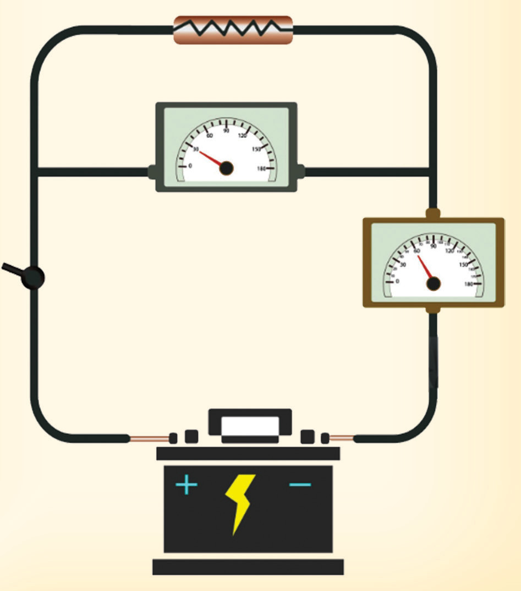

using circuit symbols and label all components.(b) Calculate the effective resistance of the entire circuit.(c) Use the readings to calculate the internal resistance r of the cell.

Resistance
Voltmeter
Ammeter
On
Off
Figure 2.24
Potential difference across a conductor, current and resistance
Performing Activity 2.4 can determine the relationship between p.d across a conductor, the current flowing through the conductor, and the conductor’s resistance and performing activity 2.5 one can determine the unknown resistance in circuit by ohms law.